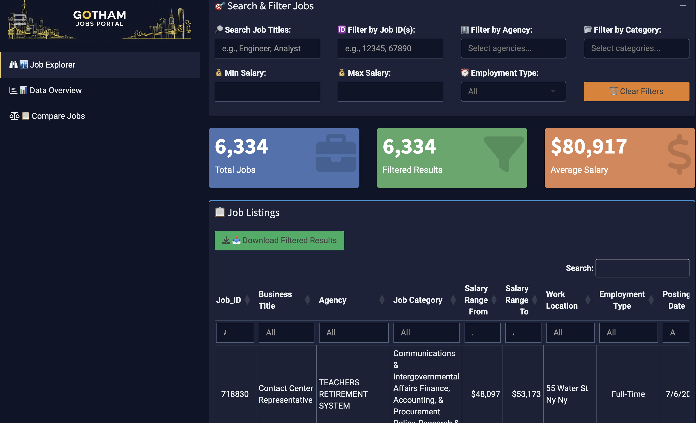

NYC Career Hub: Real-Time Job Opportunity Dashboard
Project Overview
The NYC Career Hub is an interactive Shiny application that provides a real-time, filterable view of all currently open positions across New York City government agencies. By connecting directly to the NYC Open Data API, the dashboard ensures that users have access to the most up-to-date job postings. It is designed to serve as a centralized resource for job seekers, HR professionals, and policy makers, offering a transparent and comprehensive look at the city's public sector job market.
Technical Innovation Highlights
Real-Time API Integration: Dynamic connection to NYC Open Data API pulling 100,000+ job recordsAdvanced Filtering: Multi-dimensional search with text, numeric, and categorical filtersInteractive Visualizations: Plotly-powered charts with drill-down capabilitiesResponsive Design: Mobile-friendly interface built with Bootstrap and custom CSS

Key Features & Capabilities
Live Data Streaming: Real-time synchronization with NYC's official job portal APIAdvanced Search: Multi-parameter filtering including job ID, agency, category, and salary rangesData Export: Download filtered results in CSV/Excel formats for offline analysis
Core Dashboard Features
🔍
Smart Search & Filter
Advanced multi-parameter search with text matching, job ID lookup, agency/category filters, and salary range selection.
📊
Data Visualizations
Interactive charts showing agency distribution, job categories, salary distributions, and posting timelines.
📥
Data Export
Download filtered results in multiple formats (CSV, Excel) for offline analysis and reporting.
📱
Responsive Design
Fully responsive interface optimized for desktop, tablet, and mobile devices.
Technical Architecture
The dashboard leverages modern R/Shiny development practices with a robust technical stack designed for scalability and performance:
R Shiny
NYC Open Data API
Plotly
DT (DataTables)
dplyr
httr
jsonlite
Bootstrap 5
shinydashboard
lubridate
Data Pipeline & Processing
API Integration: Real-time connection to NYC Open Data SODA API with automatic data type conversion and validationError Handling: Robust error management for API failures, malformed data, and edge casesData Transformation: Dynamic column mapping from API schema to user-friendly display namesPerformance Optimization: Server-side processing with reactive caching for improved response times
User Experience Design
Intuitive navigation with clear visual hierarchy and consistent design patterns
Real-time feedback with loading spinners and progress indicators
Contextual help text and placeholder examples for all input fields
Accessibility features including proper contrast ratios and semantic HTML
Impact & Applications
This dashboard serves multiple stakeholder groups with tailored functionality:
For Job Seekers
Comprehensive view of all NYC government job opportunities in one place
Advanced filtering to find relevant positions quickly
Salary transparency with detailed compensation ranges
Direct links to application pages
For HR Professionals & Recruiters
Market analysis tools to understand competitive salary ranges
Agency-level insights for benchmarking and planning
Export capabilities for recruitment pipeline management
For Policy Makers & Researchers
Labor market trends visualization over time
Agency distribution analysis for workforce planning
Data-driven insights for public sector employment policies
Future Enhancements
Planned improvements to extend functionality and user value:
Machine learning-powered job recommendations based on user profiles
Automated email alerts for new job postings matching saved searches
Integration with additional data sources (federal jobs, state positions)
Natural language processing for advanced job description analysis
Predictive analytics for salary trends and job market forecasting
© 2024 John D'Attoma. All rights reserved.